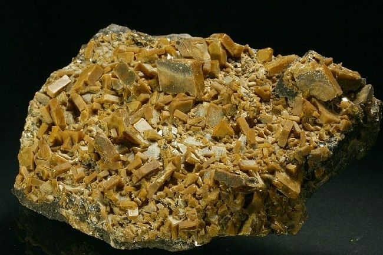

Componentes Radioactivos
La Radiacion
El desastre de Chernóbil provocó la liberación de sustanciales cantidades de radiación hacia la atmósfera de radioisótopos tanto en forma particulada como gaseosa. Este accidente ha sido la liberación no intencional de radiación hacia el ambiente más potente y significativa hasta la fecha. Se ha sugerido que la contaminación radiactiva causada por el desastre de Chernóbil excedió lo generado por los bombardeos atómicos de Hiroshima y Nagasaki en el año 1945.[cita requerida] Sin embargo, el trabajo del Comité Científico para los Problemas del Ambiente (en inglés: Scientific Committee on Problems of the Environment, SCOPE) sugiere que los dos eventos no pueden compararse directamente, con una cifra que sugiera que uno fue x veces más grande que el otro; los isótopos liberados en Chernóbil tendieron a tener vidas medias más largas que aquellos liberados por la detonación de una bomba, produciendo curvas de radiactividad que varían en forma así como en tamaño
|
Radio |
Cesio |
Boro |
Astato |
| Elementos Radioactivos |

|
|
|
|